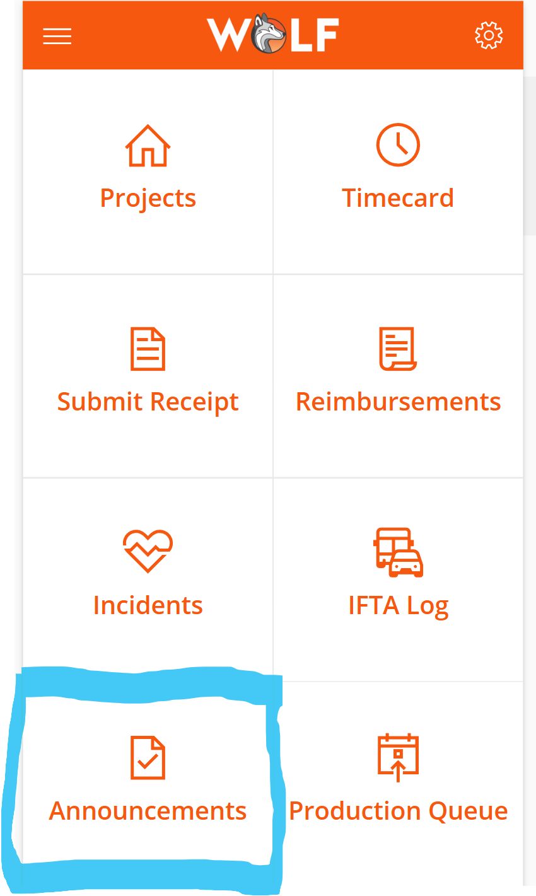
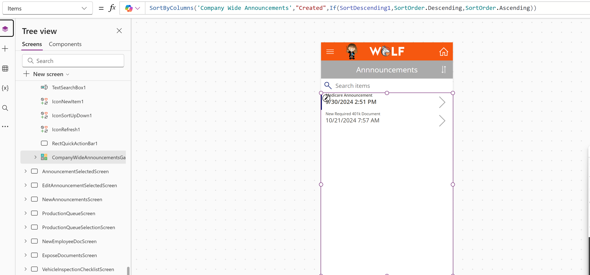
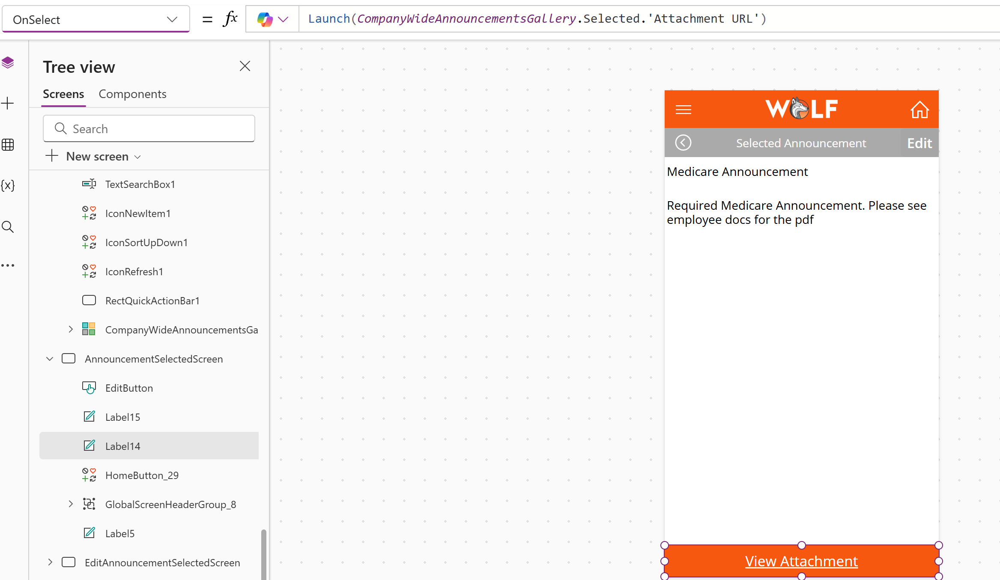
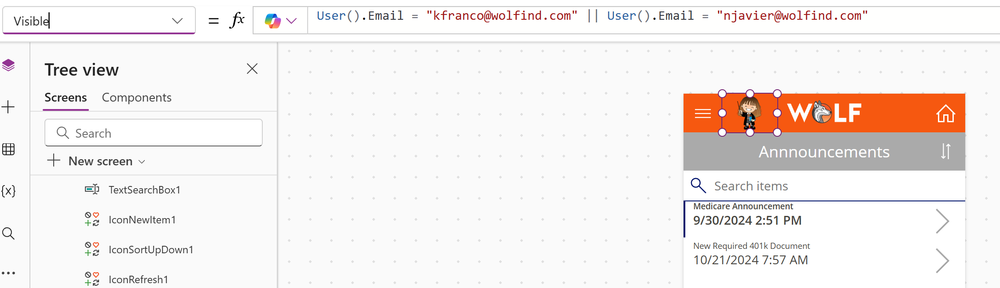

Project Summary
This Canvas app feature gives employees a centralized place to view company-wide announcements and related documents. It helps the business share important updates, policy changes, benefit information, newsletters, and employee-facing documents through a mobile-friendly Power Apps experience.
App Navigation
The Announcements tile is available from the main app home screen, giving employees quick access to company communication alongside other operational tools such as timecards, receipts, reimbursements, incidents, and IFTA logs.

Announcement Gallery
The announcements screen uses a gallery connected to the company announcements data source. Employees see announcement headlines in a clean list and can select the right arrow to open the full announcement details.

Announcement Details and Attachments
When an employee selects an announcement, the app opens a detail screen with the full message. If HR added an attachment, the employee can use the attachment button to open related files such as newsletters, healthcare documents, policy updates, or images.

Role-Based User Experience
The app includes customized visibility logic so only authorized users can see certain controls. In this example, the announcement creation button is only visible to users with specific email addresses. This demonstrates how Power Fx can personalize the user experience and control access to administrative actions.

Business Impact
This feature improves internal communication by giving employees one reliable place to find important announcements and documents. It reduces scattered communication, helps HR distribute updates more consistently, and makes company information easier to access from a mobile device.
Skills Demonstrated
Canvas app design, SharePoint data integration, gallery configuration, sorting, navigation, attachment launching, Power Fx formulas, role-based visibility, user experience customization, and employee communication workflows.